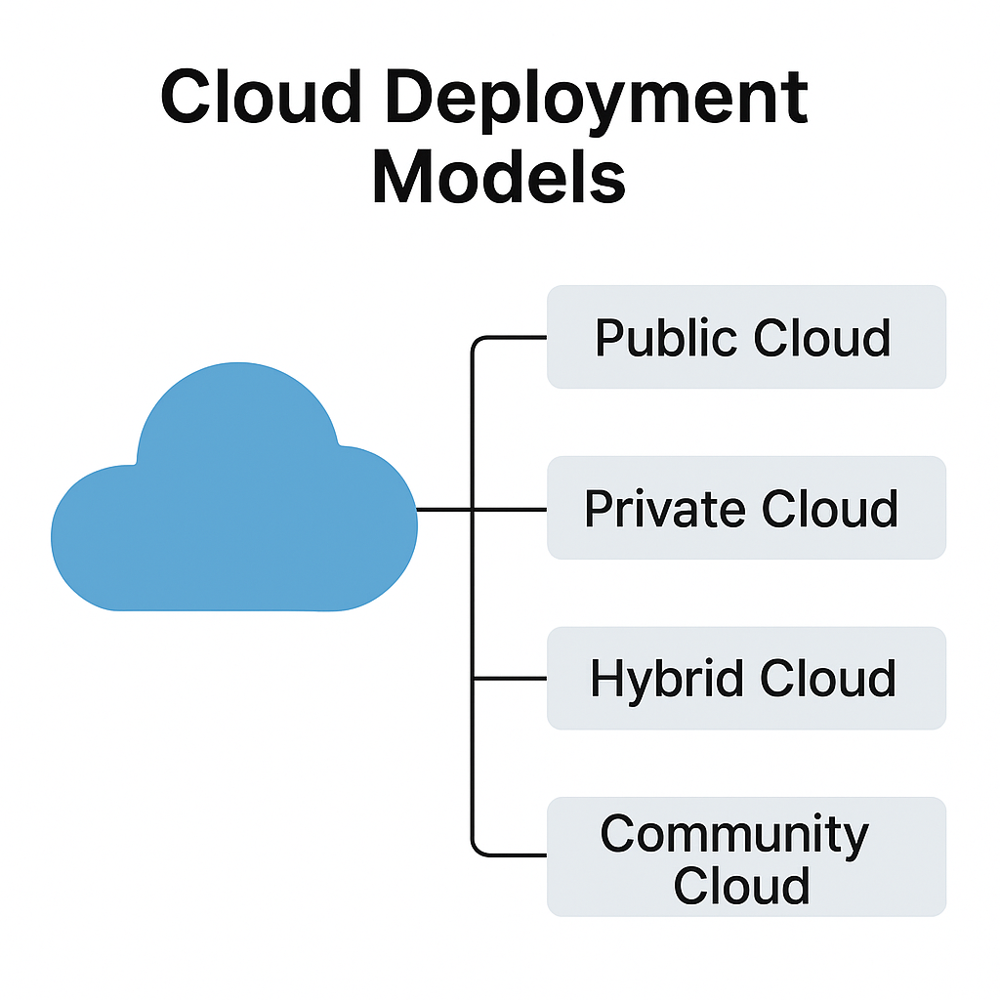

อธิบายประเภทของการใช้งานคลาวด์ในเชิงโครงสร้าง:
Public Cloud ใช้บริการจากผู้ให้บริการสาธารณะ (เช่น AWS, Azure)
Private Cloud ใช้งานเฉพาะในองค์กร มีความปลอดภัยสูง
Hybrid Cloud ผสมผสานระหว่าง Public และ Private เพื่อความยืดหยุ่น
Community Cloud ใช้ร่วมกันในกลุ่มองค์กรที่มีเป้าหมายร่วมกัน
